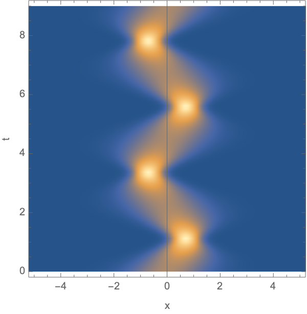
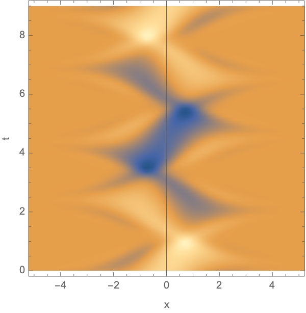
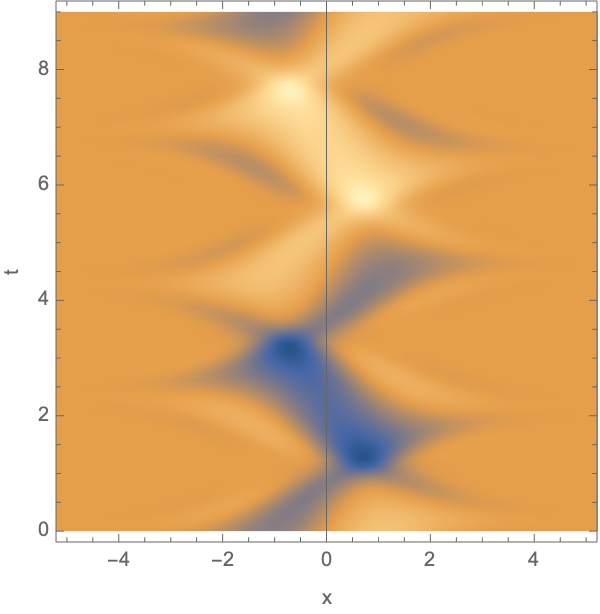

Quantum mechanics is a fundamental theory in physics that describes the physical properties of nature at the scale of atoms and subatomic particles. A quantum state can be described in terms of a wave function \(|\psi \rangle\). The time evolution of a non-relativistic quantum system is described by time-dependent Schrödinger equation
\[i \hbar \frac{\partial }{\partial t} |\psi\rangle = \hat{H} |\psi\rangle.\]
For a particle with mass \(m\) in a potential \(V(\boldsymbol{x})\), the Hamiltonian operator assumes the simple form
\[\hat{H} = \frac{\hat{p}^2}{2m} + V(\hat{\boldsymbol{x}}),\]
in terms of the position and momentum operators \(\hat{\boldsymbol{x}}\) and \(\hat{\boldsymbol{p}}\). In the position representation \(\psi(\boldsymbol{x}) = \langle \boldsymbol{x} | \psi \rangle\), the Schrödinger equation assumes the form
\[i\hbar \frac{\partial \psi(\boldsymbol{x},t)}{\partial t} = \left[-\frac{\hbar^2}{2m} \nabla_{\boldsymbol{x}}^2 + V(\boldsymbol{x}) \right]\psi(\boldsymbol{x},t),\]
with the initial condition \(\psi(\boldsymbol{x},t=0) = \psi_0(\boldsymbol{x})\). The probability density for a particle to be localized at \(\boldsymbol{x}\) at time \(t\) is given by the square \(|\psi(\boldsymbol{x},t)|^2\).
I will here show how the Schrödinger equation can be numerically solved using the Suzuki-Trotter method, following De Raedt (1987), Huyghebaert and De Raedt (1990), De Raedt and Michielsen (1994), and De Raedt (1996).
Implementations in C++ of the one- and two-dimensional Suzuki-Trotter-4 method, fourth-order in the spatial derivatives, can be downloaded from the git repository
git clone https://github.com/jfeldbrugge/Schrodinger.gitTo run the code, go to the directory Schrodinger_1D or Schrodinger_2D and run
makeThe results are stored in output.bin and can be visualized with the Mathematica notebook Plot.nb.
The Schrödinger equation with a time-independent potential is solved by the exponentiation of the Hamiltonian operator
\[ | \psi (t) \rangle = e^{-i t \hat{H}/ \hbar}|\psi(t=0)\rangle.\]
The time-evolution operator
\[U(t) =e^{-i t \hat{H}/ \hbar} = \sum_{n=0}^\infty \left(\frac{-i t }{ \hbar}\right)^n \frac{\hat{H}^n}{n!}\]
is unitarity, enforcing conservation of probability.
In the Suzuki-Trotter method, we discretize the wave function and approximate the evolution operator with the Trotter formula. We for simplicity describe the method for a one-dimensional particle second order in the spatial derivative. The method can be straightforwardly generalized to higher-dimensional models. We represent the continuous wave function \(\psi\) by its values \(\{\Psi_i\}\) on a regular lattice \(x_i=x_0 + \delta i\) with lattice spacing \(\delta\). If the lattice consisting of \(d\) lattice points, the Hamiltonian operator \(\hat{H}\) is represented by a \(d\times d\) Hermitian matrix. The potential term in the Hamiltonian operator contributes to the diagonal elements of the Hamiltonian matrix. The potential term in the Hamiltonian operator contributes, using a finite difference scheme, to a band near the diagonal. For example, using the second-order approximation of the second derivative
\[ \frac{\partial^2}{\partial x^2} f \mapsto \frac{f(x - \delta ) - 2 f(x) + f(x+\delta)}{\delta^2},\]
the Hamiltonian matrix takes a tri-diagonal form
\[\hat{H} = \begin{pmatrix} V(x_0) + 2 \delta^{-2} & -\delta^{-2} & \\ -\delta^{-2} & V(x_1) + 2 \delta^{-2} & \delta^{-2}\\ &- \delta^{-2} & V(x_2) + 2 \delta^{-2} &- \delta^{-2}\\ & & \ddots & \ddots & \ddots \end{pmatrix}.\]
Higher-order central finite difference stencils differential operator \(\frac{\partial^2}{\partial x^2}\) lead to more general band matrices.
Matrix exponentiations of large matrices are generally expensive. However, as the matrix \(-i\hat{H}\) is a sparse Hermitian matrix, we can efficiently evaluate the exponentiation by decomposing the matrix in \(2\times 2\) blocks
\[\hat{H} = K_1 + K_2 + K_3\]
with the diagonal matrix \(K_1 = \text{diag}(V(x_0) + 2 \delta^{-2}, V(x_1) + 2 \delta^{-2}, \dots, V(x_{d-1}) + 2 \delta^{-2})\) and the block matrices
\[K_2 = \begin{pmatrix} 0 & - \delta^{-2}\\ -\delta^{-2} & 0 \\ & &0 & - \delta^{-2}\\ & &-\delta^{-2} & 0 \\ & & & & \ddots \end{pmatrix},\ K_3 = \begin{pmatrix} 0 &\\ & 0 & - \delta^{-2}\\ & -\delta^{-2} & 0 \\ & & &0 & - \delta^{-2}\\ & & &-\delta^{-2} & 0 \\ & & & & & \ddots \end{pmatrix}.\]
Note that we generally need one block matrices \(K_i\) for every diagonal band in the Hamiltonian matrix.
Writing the evolution of the wave function as
\[ |\Psi_i(t)\rangle = e^{-i t \hat{H}/\hbar} |\Psi_i(t=0)\rangle = \left(e^{-i \Delta t \hat{H}/\hbar}\right)^n |\Psi_i(t=0)\rangle\]
with the small-time step \(\Delta t = t/n\), we can approximate the exponentiation using the Trotter formula
\[e^{-i \Delta t \hat{H}/\hbar} \approx e^{-i \Delta t K_1 / \hbar}e^{-i \Delta t K_2 / \hbar}e^{-i \Delta t K_3 / \hbar}.\]
Since the exponential of a block diagonal matrix is block diagonal, the operation of these three matrices can on the vector \(|\Psi_i \rangle\) is easily implemented using the matrices
\[\exp\left[-is \begin{pmatrix} \alpha_i & 0 \\ 0 & \alpha_{j} \end{pmatrix}\right]\begin{pmatrix}\Psi_i \\ \Psi_{j}\end{pmatrix}=\begin{pmatrix}e^{-i \alpha_i s}\Psi_i \\ e^{-i \alpha_{j} s}\Psi_{j}\end{pmatrix} , \]
and
\[\exp\left[-is \begin{pmatrix} 0 & \beta \\ \beta^* & 0 \end{pmatrix}\right]\begin{pmatrix}\Psi_i \\ \Psi_{j}\end{pmatrix}=\begin{pmatrix}\cos(|\beta| s) \Psi_i + \frac{i \beta}{|\beta|} \sin (|\beta| s) \Psi_j\\ \frac{i \beta^*}{|\beta|} \sin (|\beta| s) \Psi_i + \cos(|\beta|s) \Psi_j\end{pmatrix} . \]
The above approximation of the evolution operator is known as the Trotter-Suzuki-1 method
\[U_1(\Delta t) = e^{-i \Delta t K_1 / \hbar}e^{-i \Delta t K_2 / \hbar}e^{-i \Delta t K_3 / \hbar}\]
is first order in the time step \(\Delta t\) since
\[\| e^{is (A+B)} - e^{is A}e^{is B}\| \leq \frac{s^2}{2} \| [A,B]\|\,,\]
with the comutator \([A,B] = A B - B A\) and the matrix norm \(\|A\| = \max_{\|\boldsymbol{v}\|=1} \| X \boldsymbol{v}\|\). We can improve the accuracy of the approximation by symmetrization
\[\| e^{i s (A+B)} - e^{i s A/2}e^{is B}e^{is A/2}\| \leq c s^3 ,\]
for some positive constant \(c\). The corresponding evolution scheme
\[\Psi \approx U_2(\Delta t)^n \Psi_0\]
with \(U_2(\Delta t) = U_1(\Delta t/2)^T U_1(\Delta t/2)\) with the transpose \(A^T\), known as Trotter-Suzuki-2, is second order in the time step \(\Delta t\). The fourth-order Trotter-Suzuki-4 scheme
\[\Psi \approx U_4(\Delta t)^n \Psi_0\]
can be expressed in terms of the Trotter-Suzuki-2 matrix
\[U_4(\Delta t) = U_2(p\Delta t) U_2(p\Delta t) U_2((1-4p)\Delta t)U_2(p\Delta t) U_2(p\Delta t),\]
with the constant \(p=1/(4-4^{1/3})\). Note that this is not necessarily the most efficient choice.
The code corresponding to these notes is an implementation of the Trotter-Suzuki-4 scheme with the fourth-order approximation of the spatial derivative
\[ \frac{\partial}{\partial x} f \mapsto \frac{-\frac{1}{12}f(x - 2 \delta ) + \frac{2}{3}f(x - \delta ) - \frac{2}{3} f(x+\delta) + \frac{1}{12}f(x + 2\delta ) }{\delta},\]
\[ \frac{\partial^2}{\partial x^2} f \mapsto \frac{-\frac{1}{12}f(x - 2 \delta ) + \frac{4}{3}f(x - \delta ) - \frac{5}{2} f(x) + \frac{4}{3}f(x + \delta ) -\frac{1}{12}f(x + 2 \delta )}{\delta^2}.\]
Note that the Trotter-Suzuki is an accurate solution to the Schrödinger equation when the Courant-like condition
\[\frac{ \hbar \Delta t}{ m\delta^2} \ll 1.\]
The one-dimensional Hamiltonian operator \(\hat{H} = \hat{p}^2/(2m) + V(\hat{x})\), corresponding to a non-relativistic particle in a potential \(V\), assumes the discrete form
\[[\hat{H} \Psi]_i = \frac{\hbar^2}{24 m \delta^2} \Psi_{i-2} -\frac{2\hbar^2}{3 m \delta^2}\Psi_{i-1} +\left[\frac{5\hbar^2}{4 m \delta^2} + V(x_i) \right]\Psi_i -\frac{2\hbar^2}{3 m \delta^2}\Psi_{i+1} +\frac{\hbar^2}{24 m \delta^2} \Psi_{i+2} \]
using the fourth-order finite difference scheme
\[ \Psi_i''=\frac{1}{12 \delta^2}(-\Psi_{i-2} + 16\Psi_{i-1} - 30 \Psi_i +16\Psi_{i+1} -\Psi_{i+2}).\]
In terms of the constants \(a_1=\frac{\hbar^2}{24 m \delta^2}, a_2=-\frac{2\hbar^2}{3 m \delta^2}\), we can decompose the Hamiltonian matrix into five block-diagonal matrices. Two matrices rotating the elements \(\Psi_{i}\) and \(\Psi_{i+2}\),
\[ \begin{pmatrix} \Psi_i \\ \Psi_{i+2} \end{pmatrix} \mapsto \exp\left[-\frac{i \Delta t}{\hbar} \begin{pmatrix} 0 & a_1 \\ a_1 & 0 \end{pmatrix}\right] \begin{pmatrix} \Psi_i \\ \Psi_{i+2} \end{pmatrix}, \]
(the first for \(i=0,1,4,5,\dots\), and the second for \(i=2,3,6,7,\dots\)), two rotating the elements \(\Psi_i\) and \(\Psi_{i+1}\),
\[ \begin{pmatrix} \Psi_i \\ \Psi_{i+1} \end{pmatrix} \mapsto \exp\left[-\frac{i \Delta t}{\hbar} \begin{pmatrix} 0 & a_2 \\ a_2 & 0 \end{pmatrix}\right] \begin{pmatrix} \Psi_i \\ \Psi_{i+1} \end{pmatrix}, \]
(the first for \(i=0,2,3,\dots\), and the second for \(i=1,3,5,\dots\)), and one corresponding to the diagonal
\[ \Psi_i \mapsto \exp\left[-\frac{i\Delta t}{\hbar}\left( \frac{5 \hbar^2}{4 m \delta^2} + V(x_i)\right)\right]\Psi_i. \]
To demonstrate the one-dimensional code, we evolve a Gaussian wave packet
\[ \psi(t=0) = \frac{1}{(2 \pi \sigma^2)^{1/4}}e^{-\frac{(x-\mu)^2}{4 \sigma^2} + i (x-\mu)p_0 / \hbar}\]
with the initial mean \(\mu=0\), the spread \(\sigma =1\), and momentum \(p_0 = 1\) in an harmonic oscillator with the Hamiltonian operator
\[\hat{H} = \frac{\hat{p}^2}{2m} + \hat{x}^2\]
with mass \(m=1\) in units of the Planck constant \(\hbar = 1\).
Note that it takes two complete oscillations to return to the original configuration, as the wavefunction is multiplied by one after each completed oscillation. The fact that the system returns to the original configuration is an application of the integrability of the harmonic oscillator. This behaviour can be seen in the spacetime plots below.
|  |  |  |
The two-dimensional Hamiltonian operator \(\hat{H} = (\hat{\boldsymbol{p}} - e \boldsymbol{A})^2 / (2m) + V(\hat{\boldsymbol{x}})\), corresponding to a non-relativistic particle with mass \(m\), charge \(e\) in an vector potential \(\boldsymbol{A}\) in a potential \(V\), can be writen as
\[ \begin{align} \hat{H}\Psi = &\frac{1}{2m} \bigg[ -\hbar^2\left(\frac{\partial^2 \Psi}{\partial x^2} + \frac{\partial^2 \Psi}{\partial y^2}\right) -ie\hbar\left(A_x\frac{\partial \Psi}{\partial x} + A_y\frac{\partial \Psi}{\partial y} + \frac{\partial A_x\Psi}{\partial x}+ \frac{\partial A_y\Psi}{\partial y}\right)\bigg]\\ &+ \left(\frac{e^2(A_x^2+A_y^2)}{2m} + V\right) \Psi, \end{align}\]
with \(\boldsymbol{A}=(A_x,A_y)\). This operator assumes the discrete form
\[ \begin{align} [\hat{H}\Psi]_{i,j} = &+\frac{1}{24 m}\left( \frac{\hbar^2}{\delta^2} + \frac{i e \hbar}{\delta}(A_{x\ i,j} + A_{x\ i-2,j})\right)\Psi_{i-2,j}+ \frac{1}{24 m}\left( \frac{\hbar^2}{\delta^2} - \frac{i e \hbar}{\delta}(A_{x\ i,j} + A_{x\ i+2,j})\right)\Psi_{i+2,j} \\ &+\frac{1}{24 m}\left( \frac{\hbar^2}{\delta^2} + \frac{i e \hbar}{\delta}(A_{y\ i,j} + A_{y\ i,j-2})\right)\Psi_{i,j-2} + \frac{1}{24 m}\left( \frac{\hbar^2}{\delta^2} - \frac{i e \hbar}{\delta}(A_{y\ i,j} + A_{y\ i,j+2})\right)\Psi_{i,j+2} \\ &-\frac{1}{3 m}\left( \frac{2\hbar^2}{\delta^2} + \frac{i e \hbar}{\delta}(A_{x\ i,j} + A_{x\ i-1,j})\right)\Psi_{i-1,j} - \frac{1}{3 m}\left( \frac{2\hbar^2}{\delta^2} - \frac{i e \hbar}{\delta}(A_{x\ i,j} + A_{x\ i+1,j})\right)\Psi_{i+1,j}\\ &-\frac{1}{3 m}\left( \frac{2\hbar^2}{\delta^2} + \frac{i e \hbar}{\delta}(A_{y\ i,j} + A_{y\ i,j-1})\right)\Psi_{i,j-1} - \frac{1}{3 m}\left( \frac{2\hbar^2}{\delta^2} - \frac{i e \hbar}{\delta}(A_{y\ i,j} + A_{y\ i,j+1})\right)\Psi_{i,j+1} \\ &+\left[\frac{1}{2m}\left( \frac{5 \hbar^2}{\delta^2} + e^2(A_{x\ i,j}^2+A_{y\ i,j}^2)\right) + V_{i,j}\right]\Psi_{i,j}, \end{align} \]
using the fourth-order finite difference scheme
\[ \Psi_i'=\frac{1}{12 \delta}(-\Psi_{i-2} + 8 \Psi_{i-1} - 8\Psi_{i+1} +\Psi_{i+2}),\] \[ \Psi_i''=\frac{1}{12 \delta^2}(-\Psi_{i-2} + 16\Psi_{i-1} - 30 \Psi_i +16\Psi_{i+1} -\Psi_{i+2}).\]
Analogous to the one-dimensional case, we decompose this Hamiltonian matrix in nine block diagonal matrices to evaluate the exponentiation. For convenience we express these matrices in terms of the functions
\[ \begin{align} a_{1x\ i,j} = &\frac{1}{24 m}\left( \frac{\hbar^2}{\delta^2} + \frac{i e \hbar}{\delta}(A_{x\ i,j} + A_{x\ i-2,j})\right),\\ a_{1y\ i,j} = &\frac{1}{24 m}\left( \frac{\hbar^2}{\delta^2} + \frac{i e \hbar}{\delta}(A_{y\ i,j} + A_{y\ i,j-2})\right),\\ a_{2x\ i,j} =& -\frac{1}{3 m}\left( \frac{2\hbar^2}{\delta^2} + \frac{i e \hbar}{\delta}(A_{x\ i,j} + A_{x\ i-1,j})\right),\\ a_{2y\ i,j} =& -\frac{1}{3 m}\left( \frac{2\hbar^2}{\delta^2} + \frac{i e \hbar}{\delta}(A_{y\ i,j} + A_{y\ i,j-1})\right),\\ \text{diag}_{i,j}=& \frac{1}{2m}\left( \frac{5 \hbar^2}{\delta^2} + e^2(A_{x\ i,j}^2+A_{y\ i,j}^2)\right) + V_{i,j}, \end{align} \]
yielding the representation of the Hamiltonian operator
\[ \begin{align} [\hat{H}\Psi]_{i,j} =\ \ &\ (a_{1x\ i,j} \Psi_{i-2,j} + a_{1x\ i,j}^* \Psi_{i+2,j}) + (a_{1y\ i,j} \Psi_{i,j-2} + a_{1y\ i,j}^* \Psi_{i,j+2})\\ +&\ (a_{2x\ i,j} \Psi_{i-1,j} + a_{2x\ i,j}^* \Psi_{i+1,j}) + (a_{2y\ i,j} \Psi_{i,j-1} + a_{2y\ i,j}^* \Psi_{i,j+1})\\ +&\ \text{diag}_{i,j} \Psi_{i,j}. \end{align} \]
Like for the harmonic oscillator, each of the four conjugate pairs (paired in brackets) can be expressed in terms of two bock diagonal operators. The diagonal element gives the nineth operator in the Suzuki-Trotter scheme. The code published with these notes implements Suzuki-Trotter-\(4\).
To demonstrate the two-dimensional code, we model Young’s double-slit experiment. We start with a Gaussian wave packet moving upwards towards a screen with two slits. The wavefunction interacts with the screen and exhibits the famous interference pattern.